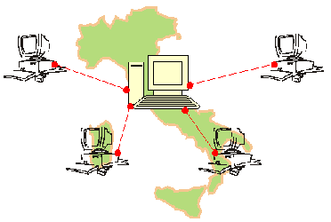

La rete WAN
Le reti WAN (Wide Area Network) sono una categoria di reti informatiche che coprono un'area geografica molto vasta, come un paese, un continente o addirittura tutto il mondo. Le reti WAN sono progettate per connettere dispositivi e reti locali (LAN o MAN) distribuite geograficamente e dislocate in diverse sedi. Le reti WAN utilizzano solitamente tecnologie di trasmissione a lunga distanza, come linee dedicate, connessioni DSL (Digital Subscriber Line), connessioni satellitari, connessioni wireless, VPN (Virtual Private Network) e Internet. I router e i firewall sono dispositivi comuni utilizzati per gestire il traffico e la sicurezza delle reti WAN. Le reti WAN sono utilizzate da organizzazioni di grandi dimensioni e complesse che necessitano di comunicare tra sedi dislocate geograficamente. Le reti WAN consentono di effettuare chiamate telefoniche, videoconferenze, condivisione di file e accesso a risorse informatiche remote in modo sicuro ed efficiente. In sintesi, le reti WAN consentono la connessione di reti locali dislocate in diverse sedi geografiche, offrendo un elevato grado di flessibilità e scalabilità. Le tecnologie utilizzate per la connessione delle reti WAN sono in grado di supportare un alto volume di traffico dati a lunghe distanze.
